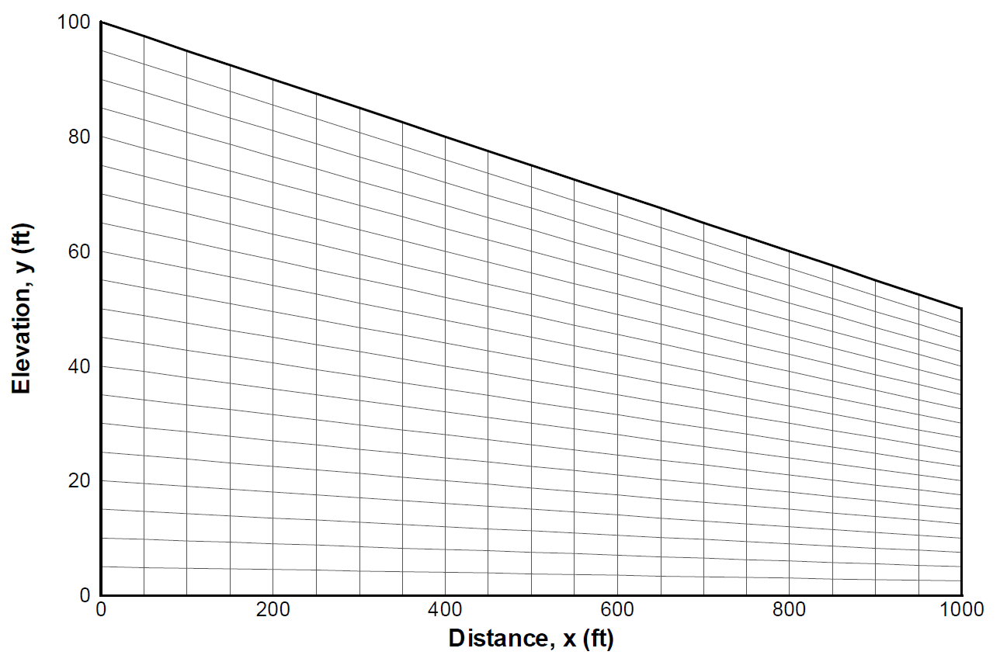

Steady-State Unconfined Flow with a Seepage Boundary Condition¶
Capabilities Tested¶
Background¶
Consider the following scenario involving steady-state groundwater flow in an unconfined aquifer that discharges to a sloped ground surface along a seepage face ([Aleman2007], Section 4.4):

The ground elevation slopes from 100 ft at \(x=0\) to 50 ft at \(x=L\), and the location of the seepline is unknown a priori. This test case presents an opportunity to verify Amanzi implementation of spatially-varying recharge and drain boundary conditions along the top surface of the domain, as well as, correct simulation of two-dimensional variably-saturated flow in an unconfined aquifer and adjoining vadose zone similar to related Amanzi verification cases. The test problem motivates use of a numerical grid that conforms to the ground surface, and the simulation can also serve as a test of Amanzi mass conservation etc. on a non-orthogonal grid.
Model¶
An analytic solution for the elevation of the water table can be readily derived if vertical gradients and velocities in the saturated zone are assumed to be negligible relative to their horizontal counterparts following [Dupuit1863] and [Forchheimer1930]. The Dupuit-Forchheimer theory of free-surface flow specifically assumes that [Freeze1979]: 1) flow is horizontal and equipotential lines are vertical, and 2) hydraulic gradient is equal to the slope of the free surface.
Let \(L_s\) denote the unknown location of the seepline, and \(h_s\) the hydraulic head or height of the water table at this location. Between the left boundary and seepline, the analytic solution for hydraulic head in the saturated zone \(h\) is analogous to Amanzi unconfined aquifer test case #1 ([Aleman2007], Equation 4.3.5; <link to unconfined test case>) with \((L_s,h_s)\) taking the place of \((L,h_L)\):
(1)\[h^2 = h_0^2 + (h_s^2 - h_0^2) \frac{x}{L_s} + \frac{Q_{src}L_s^2}{K}\left( \frac{x}{L_s} \right) \left(1 - \frac{x}{L_s} \right), 0 \leqslant x \leqslant L_s\]
The hydraulic head \(h\) is also the height of the water table. To the right of the seepline, any surface water is assumed to readily drain off such that the hydraulic head or water table elevation coincides exactly with the ground elevation, that is,
(2)\[h = 50 ft \left(2 - \frac{x}{L} \right), L_s \leqslant x \leqslant L\]
The location of the seepline is obtained by recognizing that Darcy’s law and mass conservation across the vertical line \(x=L_s\) requires ([Aleman2007], Equations 4.4.3 and 4.4.4)
(3)\[\frac{dh}{dx} \vert_{x=L_s^-} = \frac{1}{h_s} \left[ \frac{h_s^2 - h_0^2}{2L_s} - \frac{Q_{src} L_s}{2K} \right] = \frac{h_L - h_s}{L - L_s} = \frac{dh}{dx} \vert_{x=L_s^+}\]
- where
- (4)\[h_s = 50 ft \left(2 - \frac{L_s}{L} \right)\]
Simultaneous solution of Equations (3) and (4) for the specific parameters defined in the test problem schematic yields \(L_s = 829 ft\).
Problem Specification¶
Mesh¶
To conform to the physical domain depicted in the test problem schematic, a conformal grid is used for the Amanzi simulation:
{kind=link}
With the Dupuit approximation the analytic solution given by Equation (1) is one-dimensional in the horizontal coordinate and describes only the saturated zone. Because Amanzi does not directly solve a reduced governing equation set based on the Dupuit assumption, a two-dimensional \((x,z)\) simulation of the combined saturated and unsaturated zones using the [Richards1931] equation is required. Thus a vertical hydraulic conductivity and parameters defining moisture characteristic curves for the unsaturated zone are required beyond the material properties implied by Equation (1). Input parameters for the numerical simulation are summarized as:
Domain (2D)
- \(x_{min} = z_{min} = 0\)
- \(x_{max} = L = 1000 ft\)
- \(z_{max} = 100 ft\) at \(x = 0\) and \(50 ft\) at \(x = L\)
Boundary conditions
- no-flow prescribed at the \(z_{min}\) boundary
- prescribed hydraulic head: \(h(0) = 80 ft, h(L) = 50 ft\)
- recharge along the top surface = 1 ft/y for \(0 \leqslant x \leqslant L_s\)
Material properties
\(\rho = 998.2 \: kg/m^3, \mu = 1.002 \times 10^{-3} \: Pa\cdot s, g = 9.807 \: m/s^2\)
hydraulic conductivity \(K = 1 ft/d\)
- van Genuchten [vanGenuchten1980] - Mualem [Mualen1976] parameters
- \(\alpha = 1.0212e-04 Pa^{-1}\)
- \(S_r = 0.25\)
- \(m = 0.09090\)
Model discretization
- \(\Delta x = 25 ft\)
- variable: \(2.5 ft \leqslant \Delta z \leqslant 5 ft\)
{kind=link}
References¶
.... [Aleman2007] Aleman, S. 2007. PORFLOW Testing and Verification Document. Savannah River National Laboratory technical report WSRC-STI-2007-00150 Rev 0. 193 p.
| [Dupuit1863] | Dupuit, J. 1863. Estudes Thèoriques et Pratiques sur le mouvement des Eaux dans les canaux dècouverts et à travers les terrains permèables (Second Edition ed.). Paris: Dunod. |
| [Forchheimer1930] | Forchheimer, P. 1930. Hydraulik. 3d ed., Teubner, Leipzig, Berlin. |
| [Freeze1979] | Freeze, R.A. and J.A. Cherry. 1979. Groundwater. Prentice-Hall, Inc. Englewood Cliffs, NJ. 604 p. |
| [Mualen1976] | Mualem, Y. 1976. A new model predicting the hydraulic conductivity of unsaturated porous media. Water Resour. Res. 12:513-522. |
| [Richards1931] | Richards, L.A. 1931. Capillary conduction of liquids through porous mediums. Physics 1 (5): 318-333. |
| [vanGenuchten1980] | van Genuchten, M. Th. 1980. A Closed-form Equation for Predicting the Hydraulic Conductivity of Unsaturated Soils. Soil Sci. Soc. Am. J. 44: 892-898. |